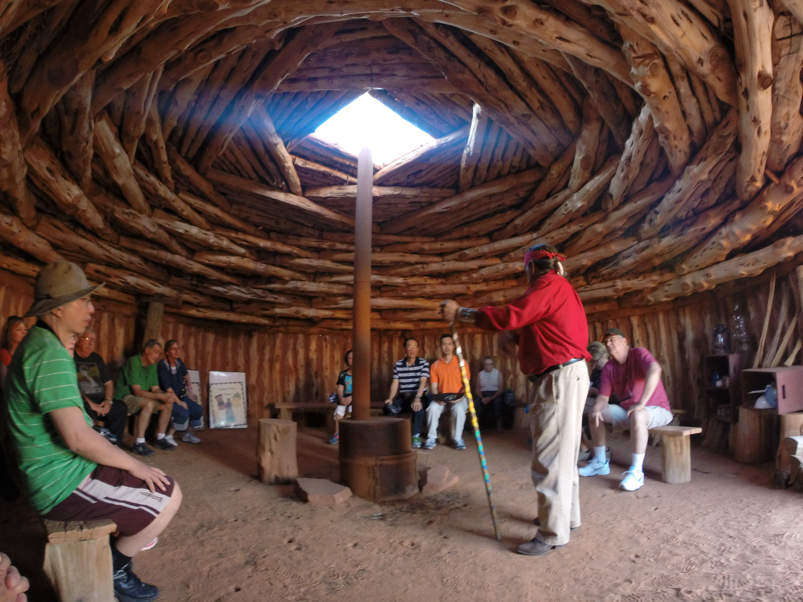
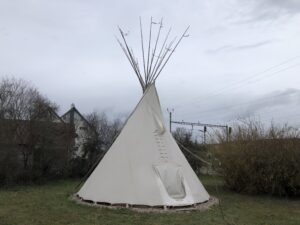
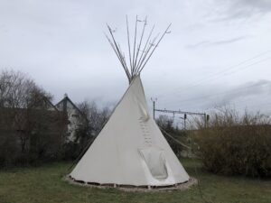
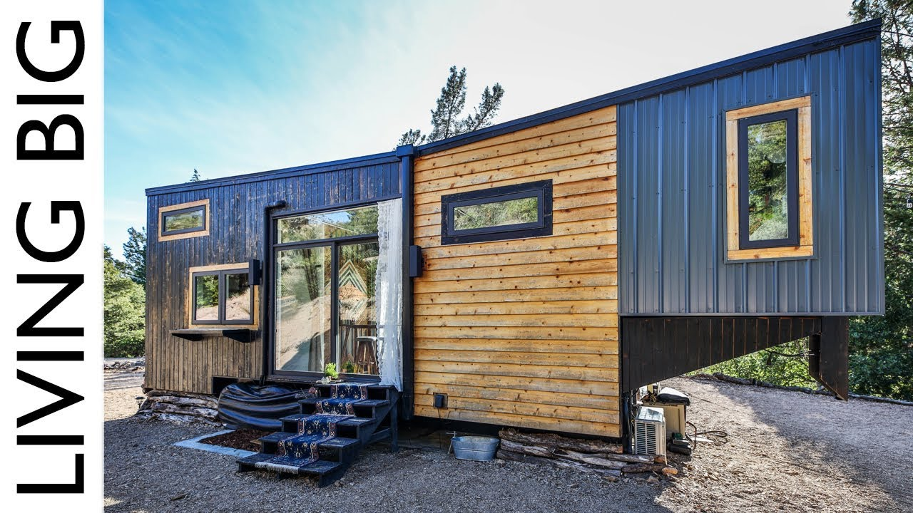

Habitat "primitif"
Ré-éditer la réalisation (provisoire ou définitive) d’habitats "primitifs", et au travers de ces réalisations :
-
s’approprier les techniques de construction sur des matériaux naturels
-
expérimenter un cadre bâti différent
-
transmettre le plaisir du travail manuel lors de construction en groupe (thérapie? socialisation? …)
Nous aimerions réaliser les constructions "primitives" suivantes
-
"Hogan" Navajo : le plaisir d’être dans une hutte ronde
 -
"Maison longue" Gauloise : le retourt aux sources
 Figure 1. maison gauloise moderne
Figure 1. maison gauloise moderne -
"Tipi" Indien ou yourte mongole, idéal pour passer quelques mois en pleine nature, ou plus …
 Figure 2. yourteFigure 3. tipi
Figure 2. yourteFigure 3. tipi
Habitat "alternatif"
Expérimenter d’autres façons d’habiter, en accord avec les profonds changements à venir, tant climatiques qu’économiques …
-
Yourte moderne : "Héliyourte" (charpente autoportante)
 Figure 4. intérieur d’une héliyourte montrant sa charpente extrêmement résistante
Figure 4. intérieur d’une héliyourte montrant sa charpente extrêmement résistante -
"Tiny House" : maisonettes mobiles (mode "US" gagnant nos contrées)
Figure 5. une Tiny house luxueuse destinée à rester à demeure (la remorque a perdu le timon …)
Principales difficultés
-
respect des règles d’urbanisme
-
terrain d’implantation